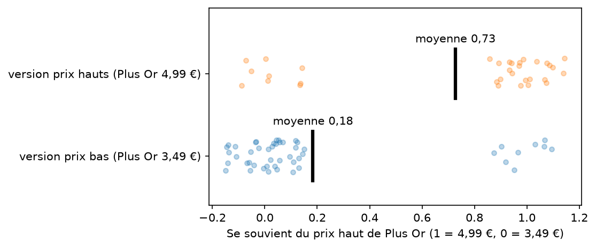
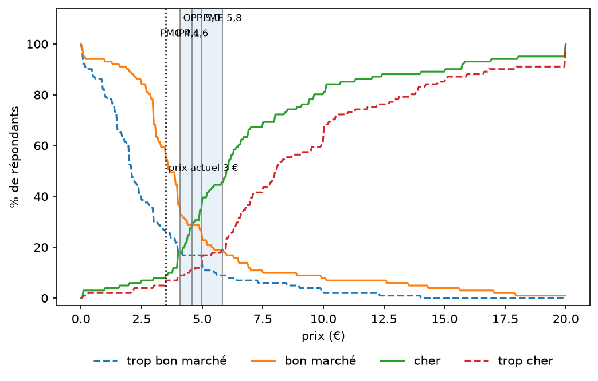
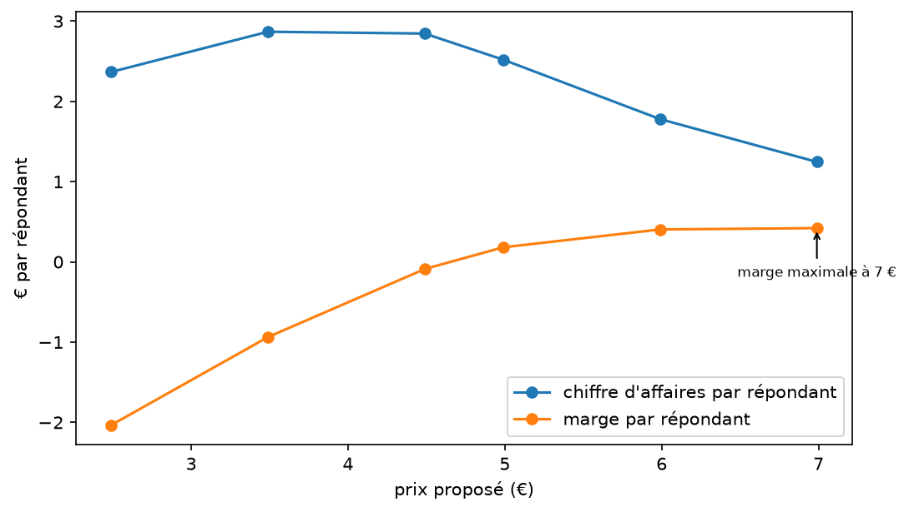

Attendu 3 sur 4 · Le prix psychologique, mesuré auprès de vraies personnes
La mesure : un test A/B sur les prix des plans Deliveroo
Le répondant choisit un abonnement parmi trois plans Deliveroo et l'offre d'une autre application, puis le teste sur trois repas. Les prix des plans Deliveroo sont tirés au sort : bas pour la moitié des répondants, hauts pour l'autre.
Le plan du test
| Élément | Ce qui est fixé avant la collecte |
|---|---|
| Objectif pour Deliveroo | Savoir si Deliveroo peut augmenter les prix de ses abonnements sans perdre de clients au profit d'une autre application ou du « sans abonnement », ou si des prix bas attirent nettement plus d'abonnés. |
| Hypothèse | Avec les prix hauts, la part de répondants qui choisissent un plan Deliveroo baisse, mais de moins de 10 % (hypothèse H4 de la question). |
| Ce que voit chaque répondant | Sur un même écran, les trois plans Deliveroo, consultables en touchant leur prix, à côté de l'offre d'une « autre application », sans marque, et d'une option « Je ne prends aucun abonnement ». Il doit sélectionner une offre pour pouvoir continuer. |
| Version A, prix bas | Plus Essentiel 2,49 € · Plus Or 3,49 € (le prix actuel) · Plus Famille 6,99 € |
| Version B, prix hauts | Chaque plan 1,50 € plus cher : Plus Essentiel 3,99 € · Plus Or 4,99 € · Plus Famille 8,49 €. Les écarts entre plans restent les mêmes : seul le niveau de prix change. |
| Ce qui ne change pas | Les avantages de chaque plan, la présentation, et l'offre de l'autre application à 5,99 € dans les deux versions, le prix d'Uber One relevé sur le marché. Seuls les prix Deliveroo diffèrent. |
| Répartition | Tirage au sort à l'ouverture du questionnaire, une chance sur deux ; la version est enregistrée dans la colonne version. |
| Métrique principale | La part de répondants dont le premier choix est un plan Deliveroo, quel qu'il soit. Le premier choix est fait avant les repas ; s'il revient en arrière pour changer d'offre, le nouveau choix est enregistré à part. |
| Métriques secondaires | La répartition entre les trois plans ; la part qui choisit l'autre application (les clients perdus au profit d'un concurrent) ; la recette par répondant, soit le prix du plan choisi en moyenne. |
| Garde-fous | Les choix des répondants qui utilisent déjà Deliveroo, ceux qu'une hausse risque de faire partir ; et la question de contrôle, qui vérifie que le prix de Plus Or a été lu. |
| Règle de décision | La hausse est recommandée si la part de choix Deliveroo en B atteint au moins 90 % de celle de A. En dessous, elle fait perdre plus d'abonnés que ne le permet le seuil de 10 %. |
Les trois plans proposés
Deliveroo propose aujourd'hui une seule formule payante, Plus Or. Le test lui ajoute deux plans imaginés pour l'étude, afin de savoir si une gamme de prix fait choisir Deliveroo plus souvent.
| Plan | Avantages | Prix A | Prix B |
|---|---|---|---|
| Plus Essentiel | Livraison offerte dès 12 € ; −10 % sur les commandes de 25 € et plus ; frais de service à payer | 2,49 € | 3,99 € |
| Plus Or, tout compris | Livraison offerte dès 12 € ; aucuns frais de service ; offres réservées | 3,49 € | 4,99 € |
| Plus Famille | Tous les avantages de Plus Or, partagés avec 4 personnes du foyer ; −10 % dès 25 € | 6,99 € | 8,49 € |
| Autre application (concurrent sans marque) | Livraison à 0 € dès 12 € ; frais de service réduits de moitié ; avantages chez des partenaires | 5,99 € | 5,99 € |
L'offre de l'autre application reprend le prix et les principaux avantages d'Uber One (consulté le 8 octobre 2026), présentés sans marque ; plans Essentiel et Famille, et version « tout compris » de Plus Or : propositions du groupe.
Les tests réels dont il s'inspire
| Test réel | Ce qu'il a montré | Ce qui en est repris |
|---|---|---|
| Principes d'expérimentation de Deliveroo, publiés par ses équipes en février 2025 | Chaque expérience part d'une hypothèse et de critères de succès, et les critères de déploiement sont fixés avant de voir les résultats. | L'objectif, l'hypothèse et la règle de décision du tableau ci-dessus, écrits avant la collecte. |
| Tests de formules d'abonnement sur une boutique en ligne | Une formule plus chère a fait baisser la conversion de 13,9 % et la recette par visiteur de 11,4 % ; cacher une formule a fait baisser la conversion de 28,1 %. | Une gamme de plans présentée ensemble, une seule variable (le niveau des prix), et deux métriques : le choix et la recette par répondant. |
| Expériences de John Gourville sur le prix « par jour » | 85 cents par jour : 52 % d'accords ; 300 dollars par an : 30 %. | La piste d'un test suivant : présenter le prix « par jour ». Non mené ici, pour garder une seule variable. |
Pages consultées le 20 octobre 2026. Les résultats des tests de boutiques en ligne sont publiés par un prestataire, sans méthodologie complète : ils servent de modèle de dispositif, pas de référence chiffrée.
Le parcours du répondant
- Accueil : l'objet est annoncé clairement, « testez un abonnement de livraison de repas » ; anonymat et consentement.
- Chapitre 1 : une matrice sur la fréquence d'usage d'Uber Eats, de Deliveroo, de Just Eat et des autres applications.
- Chapitre 2, le test A/B : le choix de l'abonnement, puis trois repas, chacun sur sa page (lundi soir, jeudi midi, samedi pour deux). Dans chaque repas, tous les plats ont le même prix, pour que le choix du plat ne dépende pas du prix. Le panier applique les frais du plan choisi ; un récapitulatif montre ce que l'abonnement a fait économiser.
- Chapitre 3, le juste prix : la question de contrôle, puis Van Westendorp pour Plus Or avec quatre curseurs, puis Gabor-Granger, une question oui ou non par prix, présentés dans l'ordre croissant, de 2,49 € à 6,99 €. Ce chapitre a été corrigé le 5 novembre 2026 (voir le nettoyage).
- Chapitre 4 : âge, situation, commandes réelles sur 30 jours, abonnements détenus ; puis un profil ludique et une invitation à partager le test.
Un bouton « Retour » permet de revenir à tout moment à l'écran précédent ; les réponses sont alors remplacées par les nouvelles.
Pourquoi les repas viennent après le choix. Le répondant décide d'abord, comme un client devant l'écran d'abonnement ; les repas lui font ensuite vivre les effets de son choix. Les frais de la simulation (2,49 € de livraison, 0,99 € de service) sont fictifs, du même ordre que ceux affichés par les applications.
Pourquoi les questions de prix viennent ensuite. Le choix n'est influencé par aucune réflexion préalable sur le prix. En contrepartie, les prix vus peuvent servir d'ancre aux curseurs et aux cartes : ces réponses sont analysées séparément pour A et pour B.
La population interrogée
Le questionnaire s'adresse à toute personne majeure. Personne n'est écarté : les utilisateurs de Deliveroo sont ceux qu'une hausse peut faire partir, ceux d'Uber Eats et les non-utilisateurs ceux qu'une baisse peut attirer. La matrice d'usage sert à comparer ces profils, pas à filtrer.
Combien de répondants ?
Pour détecter avec une puissance de 80 % et un risque d'erreur de 5 % un passage de 40 % à 30 % de choix Deliveroo, il faut environ 350 répondants par version. Avec 100 répondants par version, seul un écart d'environ 19 points serait détectable de façon fiable.
Calcul du groupe : n = (1,96 + 0,84)² × (0,40 × 0,60 + 0,30 × 0,70) ÷ 0,10². Si l'échantillon reste petit, le résultat est présenté comme une tendance.
Les données
Une ligne par répondant, des colonnes fixes. Aucun nom, aucune adresse e-mail, aucune adresse IP. Les réponses sont des données personnelles : elles restent hors de ce site et de GitHub.
| Colonne | Contenu |
|---|---|
id, horodatage | Identifiant aléatoire et date de la réponse |
version, prix_affiche | A ou B, et le prix de Plus Or dans cette version (3,49 ou 4,99) |
usage_uber_eats, usage_deliveroo, usage_just_eat, usage_autre | La matrice d'usage : jamais, rare, mois ou semaine |
plan_premier_choix, prix_premier_choix | essentiel, or, famille, concurrent ou aucun, et son prix : le choix fait avant les repas, la donnée centrale du test |
souscription_deliveroo | 1 si le premier choix est un plan Deliveroo, 0 sinon : la métrique principale |
plan_choisi, prix_choisi, choix_modifie | Le choix final, et 1 si le répondant est revenu en arrière pour en changer |
plans_consultes | Les plans Deliveroo que le répondant a affichés avant de choisir |
sim_1, sim_2, sim_3, sim_commandes, sim_total, sim_economies | Les trois repas : plat choisi, « maison » ou « annule » ; nombre de commandes, montant total et économies réalisées |
controle | 3_49, 4_99 ou nsp : le prix de Plus Or dont le répondant se souvient |
vw_…, vw_coherent | Les quatre réponses de Van Westendorp pour Plus Or, et 1 si elles montent |
gg_2_49 à gg_6_99, gg_coherent | 1 si le répondant prendrait Plus Or à ce prix, et 0 en cas d'incohérence |
age, statut, commandes_30j, abonnements | Profil |
Ce que la mesure vaut
C'est une simulation : choisir un abonnement sans payer n'est pas s'abonner, et les répondants sont souvent plus généreux qu'en situation réelle. L'échantillon est surtout étudiant et clermontois, et les étudiants ont accès gratuitement à Deliveroo Plus Argent. C'est pourquoi la décision repose sur l'écart entre A et B, que le tirage au sort rend valide, plutôt que sur les niveaux absolus.
Sur téléphone, les plans Deliveroo apparaissent avant l'offre de l'autre application : cet ordre, identique dans les deux versions, ne fausse pas la comparaison entre A et B, mais peut favoriser Deliveroo dans les niveaux absolus.
Les résultats
Les réponses ont été analysées avec le squelette analyse-projet-prix du cours d'Analyse de données (CM 3, 21 octobre 2026), dont seul le fichier de réglages a été adapté aux colonnes du questionnaire. Collecte du 20 octobre au 24 novembre 2026 ; export du tableau des réponses le 24 novembre 2026.
1. Qui a répondu
| Profil (101 réponses gardées) | Répartition |
|---|---|
| Âge | 18 à 24 ans : 77 · 25 à 34 ans : 19 · 35 à 49 ans : 2 · non renseigné : 1 |
| Situation | Étudiant : 81 · en emploi : 14 · en recherche d'emploi : 5 · autre : 1 |
| Usage de Deliveroo | jamais : 62 · rarement : 20 · chaque mois : 14 · chaque semaine : 5 |
| Abonnements détenus | aucun : 60 · Uber One seul : 21 · Deliveroo Plus (seul ou avec un autre) : 15 · autre : 5 |
| Commandes réelles sur 30 jours | médiane : 1 ; moyenne : 2,4 |
| Questionnaire | ancienne version (avant le 5 novembre) : 56 · version corrigée : 45 |
Un échantillon jeune, surtout étudiant, et en majorité non utilisateur de Deliveroo : il représente mieux les clients qu'une baisse pourrait attirer que les abonnés qu'une hausse pourrait faire partir.
2. Le nettoyage
| Étape | Retirées | Restent |
|---|---|---|
| Réponses reçues | 172 | |
| Doublons (même identifiant) | 0 | 172 |
| Réponse de test du groupe (20 octobre 2026) | 1 | 171 |
| Van Westendorp : les quatre seuils ne montent pas | 65 | 106 |
| Gabor-Granger : oui à un prix plus haut qu'un prix refusé | 5 | 101 |
Restent 57 réponses en version A et 44 en version B. Aucune réponse n'est retirée pour une erreur à la question de contrôle : ce serait casser le tirage au sort.
Où était l'erreur. Les 65 retraits pour Van Westendorp viennent tous de l'ancienne version du questionnaire (65 sur 126 réponses) ; la version corrigée n'en a produit aucun (0 sur 46). La cause était donc dans le questionnaire, pas chez les répondants :
- La première question de Van Westendorp était mal formulée : « À partir de quel prix… serait-il si bon marché que vous douteriez de sa qualité ? » au lieu de « En dessous de quel prix… ». 45 des 65 réponses incohérentes placent « trop bon marché » au-dessus de « bon marché » ; chez elles, la médiane de ce seuil est de 4,60 €, contre 2,00 € chez les réponses cohérentes.
- Rien n'empêchait un prix de descendre : chaque curseur repartait de 0 € et acceptait une valeur inférieure à la précédente.
- Gabor-Granger se répondait en balayant des cartes, sans retour possible : un geste involontaire suffisait à créer une incohérence (12 réponses avec l'ancienne version, 1 avec la nouvelle).
Les réponses incohérentes se répartissaient également entre les versions (33 en A, 32 en B) : l'erreur ne fausse pas la comparaison. Correction le 5 novembre 2026 : question reformulée, curseur qui part de la réponse précédente et refuse un prix plus bas, boutons Oui / Non avec retour en arrière.
Les réponses extrêmes, signalées mais gardées. 11 réponses gardées touchent une borne des curseurs (0 € ou 20 €), et une déclare 23 commandes en 30 jours avec un seuil « trop cher » de 2,10 €. Elles sont cohérentes, donc gardées ; 9 sur 11 sont en version A, ce qui peut tirer vers le haut ses seuils de Van Westendorp. Les points de Van Westendorp reposent sur des parts de répondants, pas sur des moyennes : une valeur extrême n'y pèse pas plus qu'une autre.
3. Le contrôle de manipulation
La manipulation a fonctionné : 18 % des répondants de la version A se souviennent d'un Plus Or à 4,99 €, contre 73 % en version B (t de Welch = −5,63, p < 0,001, d de Cohen = 1,29, effet fort ; 49 et 33 répondants, sans les 19 « je ne sais plus »). La différence de prix a été perçue : le test A/B se lit comme l'effet du prix.

4. Le tirage au sort et le test A/B
Le tirage au sort a fonctionné : les deux versions ne diffèrent ni par l'âge (χ² = 2,74, p = 0,433) ni par l'usage de Deliveroo (χ² = 3,56, p = 0,313).
| Variable | A, prix bas | B, prix hauts | Test | Conclusion |
|---|---|---|---|---|
| Premier choix : un plan Deliveroo (métrique principale) | 60 % | 50 % | χ² = 0,94 ; p = 0,333 ; V de Cramer = 0,10 | non significatif |
| Seuil « trop cher » (Van Westendorp) | 9,46 € | 9,29 € | t de Welch = 0,18 ; p = 0,857 ; d = 0,04 | non significatif |
| Prendrait Plus Or à 4,99 € (Gabor-Granger) | 44 % | 59 % | χ² = 2,30 ; p = 0,129 ; V = 0,15 | non significatif |
| Les trois autres seuils de Van Westendorp | écarts de 0,06 € à 0,92 € | p de 0,295 à 0,897 | non significatifs | |
| Premier choix | Essentiel | Or | Famille | Autre application | Aucun |
|---|---|---|---|---|---|
| Version A, prix bas | 14 % | 40 % | 5 % | 9 % | 32 % |
| Version B, prix hauts | 7 % | 39 % | 5 % | 7 % | 43 % |
La lecture. La manipulation a réussi et le test A/B n'est pas significatif : le prix plus haut a été vu, et il ne change pas significativement le choix. Plus Or garde la même part (40 % contre 39 %) ; c'est surtout Essentiel qui recule, au profit du « sans abonnement ». L'autre application ne gagne rien : 9 % en A, 7 % en B.
La puissance. Avec 57 et 44 répondants, le test détecte un effet moyen (d = 0,5) 69 fois sur 100, et un petit effet 17 fois sur 100 : l'absence de différence significative ne prouve pas l'absence d'effet. Le rapport B ÷ A de la part de choix Deliveroo est de 84 % (50,0 ÷ 59,6), sous le seuil de 90 % fixé avant la collecte : c'est une tendance, non significative, que la proposition prend en compte dans ses scénarios.
Les utilisateurs actuels de Deliveroo, ceux qu'une hausse peut faire partir, sont 39 sur 101 : 73 % choisissent un plan Deliveroo en A (19 sur 26), 77 % en B (10 sur 13). Trop peu pour conclure, mais rien n'indique qu'ils fuient les prix hauts.
5. Le prix accepté : Van Westendorp

| Point | Ensemble | Version A | Version B |
|---|---|---|---|
| Bas de la zone acceptable (PMC) | 4,09 € | 3,99 € | 4,70 € |
| Prix d'indifférence (IPP) | 4,59 € | 4,28 € | 5,01 € |
| Prix optimal (OPP) | 4,99 € | 4,84 € | 5,04 € |
| Haut de la zone acceptable (PME) | 5,84 € | 5,29 € | 6,01 € |
Le prix actuel de 3,49 € est sous la zone acceptable : 27 % des répondants le jugent trop bon marché pour être crédible, et seulement 5 % trop cher. 4,99 € est le prix optimal : 17 % le jugent trop bon marché, 12 % trop cher. Il reste dans la zone acceptable des deux versions. La zone de la version B est plus haute que celle de A : le prix vu sert d'ancre, comme prévu.
6. Le prix qui rapporte : Gabor-Granger
| Prix de Plus Or | 2,49 € | 3,49 € | 4,49 € | 4,99 € | 5,99 € | 6,99 € |
|---|---|---|---|---|---|---|
| Prendraient l'abonnement | 95 % | 82 % | 63 % | 50 % | 30 % | 18 % |
| Chiffre d'affaires par répondant | 2,37 € | 2,87 € | 2,85 € | 2,52 € | 1,78 € | 1,25 € |
| Marge de l'abonnement seul par répondant (coût d'un abonné : 4,63 €) | −2,03 € | −0,94 € | −0,09 € | +0,18 € | +0,40 € | +0,42 € |

Calcul : marge par répondant = (prix − 4,63 €) × part qui accepte ; à 4,99 € : (4,99 − 4,63) × 50,5 % = 0,18 €. La marge de l'abonnement seul ne devient positive qu'à 4,99 €. Elle continue de monter au-delà, mais 5,99 € et 6,99 € ne sont acceptés que par 30 % et 18 % des répondants, et ce calcul oublie la marge des commandes que chaque abonné perdu emporte avec lui : la proposition l'ajoute. Ce sont des intentions déclarées, pas des achats.
Ce que valent ces résultats
- 101 réponses analysées : une tendance plus solide qu'avec 55, mais la puissance du test A/B reste sous 80 %.
- Un échantillon surtout étudiant (18 à 24 ans) et peu utilisateur de Deliveroo : 62 répondants sur 101 ne l'utilisent jamais.
- Pas de contrôle d'attention ni de question « membre du M1 » dans le questionnaire.
- Le questionnaire a changé le 5 novembre 2026 : les 56 réponses gardées d'avant cette date sont cohérentes, mais ont lu une première question formulée autrement.